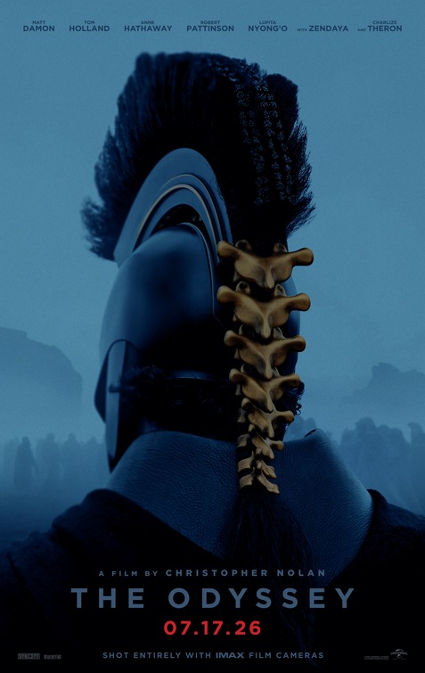

Uma das histórias mais antigas da literatura ocidental ganha uma adaptação cinematográfica pelas mãos do cineasta Christopher Nolan. A Odisseia é um poema épico atribuído a Homero que acompanha as aventuras do herói grego Odisseu (Matt Damon) em sua volta para casa após a Guerra de Troia. O guerreiro enfrenta criaturas míticas e deuses em sua jornada épica de retorno onde sua esposa Penélope (Anne Hathaway) o aguarda. O rei de Ítaca descreve sua trajetória esbarrando com seres como o Ciclope Polifemo, as sereias e a feiticeira/deusa Circe.
| Filme | Ano | Nota | Status |
|---|---|---|---|
| Verity | 2026 | 6,0 | Em cartaz |
| Resident Evil | 2026 | 7,6 | Em cartaz |
| Outra Mamãe | 2026 | 6,0 | Em cartaz |
| Street Fighter | 2026 | ?,? | Em breve |
| Dentro da Baleia | 2026 | ?,? | Em breve |
| Godzilla Minus Zero | 2026 | 8,4 | Em breve |
 Olá! Meu nome é Paulo Helder, sou um estudante de Engenharia de Software na UNEB. Este catálogo nasceu de uma avaliação sobre CSS e, por esse motivo, você está lendo essa mensagem. Aproveite!
Olá! Meu nome é Paulo Helder, sou um estudante de Engenharia de Software na UNEB. Este catálogo nasceu de uma avaliação sobre CSS e, por esse motivo, você está lendo essa mensagem. Aproveite!
O site possui estruturas relativamente simples, pois meu conhecimento nas linguagens é limitado, porém é com a prática que melhoramos. Apesar de simples, o layout está agradável e todos os requisitos foram atendidos. Agradeço a atenção.